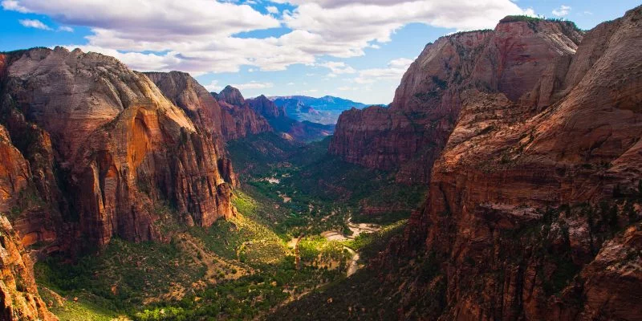
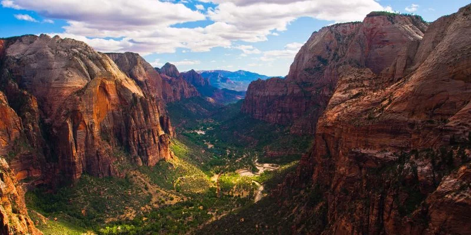

Park City, Utah, is home to the largest ski resort in the United States, Park City Mountain Resort, which offers over 7,300 acres of skiable terrain. This expansive resort emerged from the merging of Park City Mountain Resort and Canyons Resort in 2015, providing skiers and snowboarders with an extensive variety of slopes, parks, and lifts..
Park City was a key venue for the 2002 Winter Olympics, hosting several events including the snowboarding and giant slalom at Park City Mountain Resort. This Olympic heritage has left a lasting legacy in the area, including world-class facilities and an ongoing commitment to winter sports excellence that attracts athletes and enthusiasts from around the world.
St. George
St. George is known for its stunning natural scenery and mild, snow-free winters, making it a popular destination for golfers, hikers, and outdoor enthusiasts. The city is surrounded by several state parks, including Snow Canyon State Park, which features volcanic cones, sandstone cliffs, and ancient lava flows, providing numerous opportunities for outdoor activities such as hiking, biking, and camping.
St. George has a rapidly growing population and serves as a commercial hub for northwestern Arizona and southeastern Utah. It has seen significant development in recent years, attracting retirees and families alike due to its warm climate, low cost of living, and proximity to scenic attractions like Zion National Park and the Grand Canyon.
 
